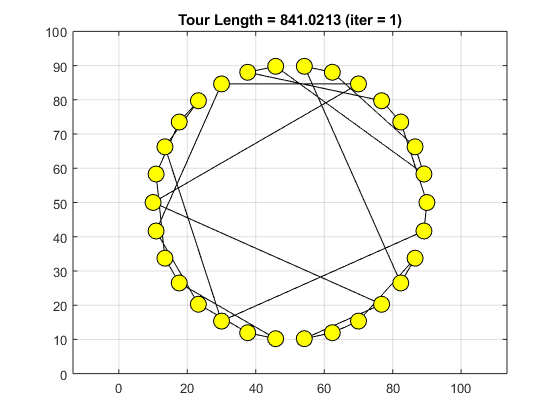
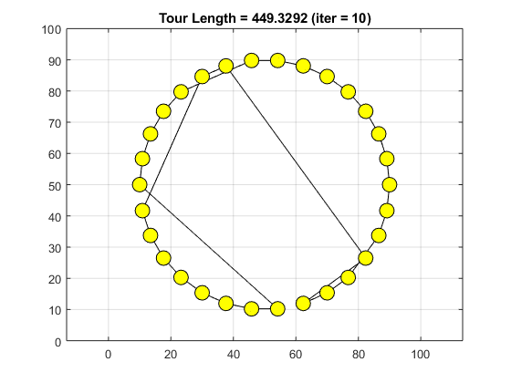
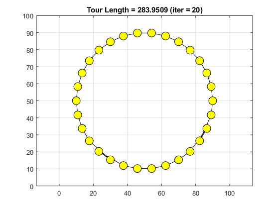
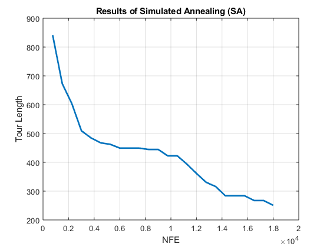

Simulated Annealing
This document shows how Simulated Annealing (SA) as a part of Yarpiz Evolutionary Algorithms Toolbox (YPEA) cab be used to solve optimization problems.
Contents
Problem Definition
We are going to solve a Traveling Salesman Problem (TSP) using Simulated Annealing (SA).
Assume that we have 30 nodes (cities), around a circle. Let's define the number of cities:
n = 30;
We shuffle the order of nodes, to have enough randomness in our problem.
t = randperm(n) - 1;
Let's place the nodes on a circle, with radius of 40, and centerd on (50,50).
R = 40; x0 = 50; y0 = 50; x = x0 + R * cos(2*pi*t/n); y = y0 + R * sin(2*pi*t/n);
Now, we are ready to calculate the distance matrix.
d = zeros(n,n); for i = 1:n for j = i+1:n d(i,j) = sqrt((x(i)-x(j))^2 + (y(i)-y(j))^2); d(j,i) = d(i,j); end end
Also, we need to define a function, that computes length of a given tour, on a graph. A one line solution, as an anonymous function, is as follows:
TourLength = @(tour) trace(d(tour ,tour([2:end 1])));
Now we have all of needed components to define the optimization problem.
To define the problem, we need an instance of Optimization Problem class.
problem = ypea_problem();
We need to define a decision variable, named Tour, of permutation type, with the length on n. This can be done by running:
problem.vars = ypea_var('Tour', 'perm', 'size', n);
And, the objective is to minimize the well-known sphere function in this domain.
problem.obj_func = @(sol) TourLength(sol.Tour);
Also, we define a goal value for our problem, which is the perimeter of the circle, in the case of our problem. By defining this goal value, as soon as the algorithm finds a solution that meets this goal, the execution of the optimization process, will be terminated.
problem.goal = 2*pi*R;
To get more information on the optimization problems and decision variables, you can go to Optimization Problems and Decision Variables.
Simulated Annealing
Now, we are ready to create, initialize and utilize the Simulated Annealing (SA) to solve the Travelin Salesman Problem (TSP), defined above. We use a parallel population-based version of SA. However, by setting the value of pop_size and move_count to 1, the classic SA is available.
First, we must create an instance of algorithm class:
alg = ypea_sa();
Let's set the parameters of the algorithm.
% Maximum Number of Iterations alg.max_iter = 100; % Population Size alg.pop_size = 5; % Sub-Iretaions at a Fixed Temperature alg.max_sub_iter = 10; % Number of Moves (Neighbor Solutions) per Individual alg.move_count = 15; % Mutation Rate alg.mutation_rate = 1/problem.var_count; % Mutation Step Size alg.mutation_step_size = 0.5; % Mutation Step Size Damp Rate alg.mutation_step_size_damp = 1; % Initial Temperature alg.initial_temp = 10000; % Final Temperature alg.final_temp = 1;
By definig a funtion like this, at the end of your script, or in a seprate file, you can plot the best tour at each iteration.
function plot_tsp_results(alg, ~, data) % Plots best tour ever found for TSP by algorithm (alg) x = data.x; y = data.y; figure(1); tour = alg.best_sol.solution.Tour; tour = tour([1:end 1]); plot(x(tour), y(tour), 'ko-', 'MarkerSize', 12, 'MarkerFaceColor', 'y'); title("Tour Length = " + alg.best_sol.obj_value + " (iter = " + alg.iter + ")"); xlim([0 100]); ylim([0 100]); grid on; axis equal; drawnow(); end
To have the plot of best tour at each iteration, you should have the following line in your code, to call the ploting function, at the end of each iteration. This is done by adding an event listener function to the evolutionary algorithm object.
data.x = x; data.y = y; alg.on_iteration_end(@(this,e) plot_tsp_results(this, e, data));
Of course, you have to define the plot_tsp_results function, listed above.
Now, we are ready to run the algorithm and solve the problem. The solve method, gets problem as input and returns best_sol, the best solution found by the algorithm.
best_sol = alg.solve(problem);
Simulated Annealing started ... Initializing population. Iteration 1: Best this. Value = 841.0213, NFE = 755 Iteration 2: Best this. Value = 672.7442, NFE = 1505 Iteration 3: Best this. Value = 603.414, NFE = 2255 Iteration 4: Best this. Value = 509.2099, NFE = 3005 Iteration 5: Best this. Value = 484.6718, NFE = 3755 Iteration 6: Best this. Value = 467.5031, NFE = 4505 Iteration 7: Best this. Value = 462.5958, NFE = 5255 Iteration 8: Best this. Value = 449.3292, NFE = 6005 Iteration 9: Best this. Value = 449.3292, NFE = 6755 Iteration 10: Best this. Value = 449.3292, NFE = 7505 Iteration 11: Best this. Value = 444.6659, NFE = 8255 Iteration 12: Best this. Value = 444.6659, NFE = 9005 Iteration 13: Best this. Value = 422.4166, NFE = 9755 Iteration 14: Best this. Value = 422.4166, NFE = 10505 Iteration 15: Best this. Value = 393.5371, NFE = 11255 Iteration 16: Best this. Value = 361.0898, NFE = 12005 Iteration 17: Best this. Value = 330.6851, NFE = 12755 Iteration 18: Best this. Value = 315.7629, NFE = 13505 Iteration 19: Best this. Value = 283.9509, NFE = 14255 Iteration 20: Best this. Value = 283.9509, NFE = 15005 Iteration 21: Best this. Value = 283.9509, NFE = 15755 Iteration 22: Best this. Value = 267.4096, NFE = 16505 Iteration 23: Best this. Value = 267.4096, NFE = 17255 Iteration 24: Best this. Value = 250.8683, NFE = 18005 End of optimization.
Some of Output Plots
 
You may turn of the text output, by disabling the display property, just befor running the algorithm (i.e. calling alg.solve(problem)).
alg.display = false;
Results
The actual solution, is stored in the solution field of best_sol.
best_sol.solution
ans =
struct with fields:
Tour: [1×30 double]
The best tour found by the algorithm, denoted by Tour is as follows:
best_sol.solution.Tour
ans =
Columns 1 through 13
2 6 14 18 25 21 20 13 17 27 22 26 28
Columns 14 through 26
23 29 11 5 4 10 1 8 30 16 9 15 19
Columns 27 through 30
24 12 7 3
and the related objective value is:
best_sol.obj_value
ans = 250.8683
Total run time of the algorithm is given by (in seconds):
alg.run_time
ans =
3.0388
and total number of function evaluations is given by:
alg.nfe
ans =
18005
We can illustrate the result of optimization process by plotting best objective value history (alg.best_obj_value_history) vs. number of function evaluations (alg.nfe_history).
figure; alg.plot('nfe', 'LineWidth', 2); xlabel('NFE'); ylabel('Tour Length'); title(['Results of ' alg.full_name]); grid on;